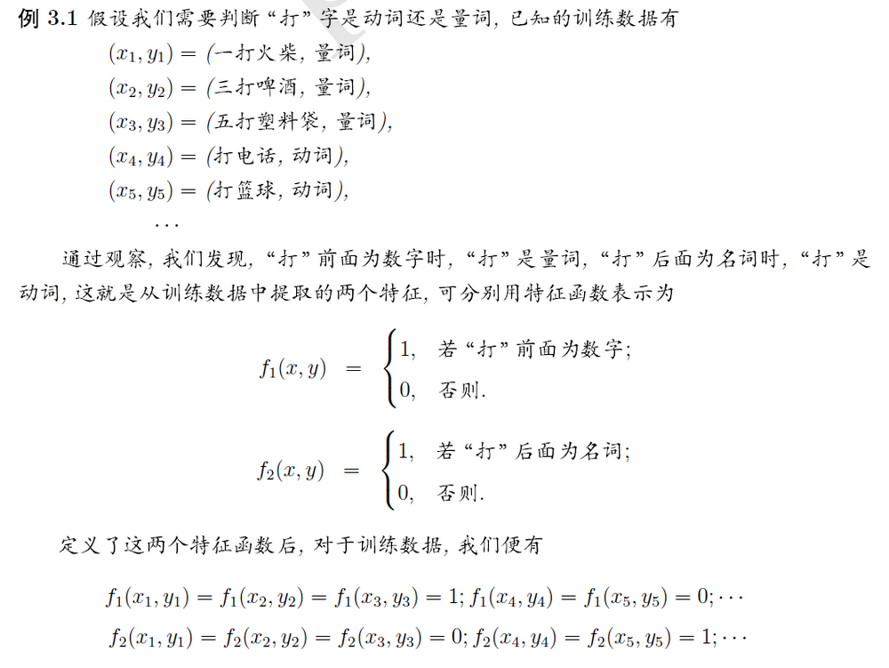

俗话说，”不要把鸡蛋放在一个篮子里“，这样是为了降低风险。为什么能降低风险呢？背后的数学道理就是最大熵原理。
本文介绍内容有：
-
最大熵原理
-
最大熵模型
-
和逻辑回归的关系
- 为什么logistics regression用sigmoid函数
最大熵原理
引用吴军的《数学之美》的例子：
有 一次，我去 AT&T 实验室作关于最大熵模型的报告，我带去了一个骰子。我问听众"每个面朝上的概率分别是多少"，所有人都说是等概率，即各点的概率均为1/6。这种猜测当然 是对的。我问听众们为什么，得到的回答是一致的：对这个"一无所知"的骰子，假定它每一个朝上概率均等是最安全的做法（你不应该主观假设它象韦小宝的骰子一样灌了铅）。从投资的角度看，就是风险最小的做法。从信息论的角度讲，就是保留了最大的不确定性，也就是说让熵达到最大。接着，我又告诉听众，我的这 个骰子被我特殊处理过，已知四点朝上的概率是三分之一，在这种情况下，每个面朝上的概率是多少？这次，大部分人认为除去四点的概率是 1/3，其余的均是 2/15，也就是说已知的条件必须满足（四点概率为 1/3），而对其数学期望余各点的概率因为仍然无从知道，因此只好认为它们均等。注意，在猜测这两种不同情况下的概率分布时，大家都没有添加任何主观的假 设，诸如四点的反面一定是三点等等。（事实上，有的骰子四点反面不是三点而是一点。）这种基于直觉的猜测之所以准确，是因为它恰好符合了最大熵原理。
最大熵原理指出，当我们需要对一个随机事件的概率分布进行预测时，我们的预测应当满足全部已知的条件，而对未知的情况不要做任何主观假设。（不做主观假设这点很重要。）在这种情况下，概率分布最均匀，预测的风险最小。因为这时概率分布的信息熵最大，所以人们称这种模型叫"最大熵模型"。我们常说，不要把所有的鸡蛋放在一个篮子里，其实就是最大熵原理的一个朴素的说法，因为当我们遇到不确定性时，就要保留各种可能性。
在决策树那篇文章中，我介绍过熵的概念，这里做一个简单的复习。
信息论与概率统计中，熵（Entropy）用来表示随机变量不确定性的大小，熵越大，不确定性越大。
设随机变量X有d个取值, 取值为的概率为, 则随机变量的熵定义为：
计算时，若p = 0，则 。
因为熵只依赖于X的分布，所以可以将写为
熵满足下面的不等式：
接着介绍条件熵（conditional entropy），即给定随机变量X后，D剩余的不确定性（熵）:
其实就是按特征X的取值划分数据，对取值为的数据计算熵，然后乘以取值为的概率。
最大熵模型
最大熵原理是统计学习的一般原理，运用到分类问题上就得到了最大熵模型。最大熵模型是给定，输出条件概率条件概率。
那么，如何把最大熵原理应用到分类问题上呢？上面提到，最大熵原理需要满足已知条件，而未知的情况就假设它们概率均等。
换句话说，我们需要让模型先满足所有的约束条件（满足约束条件的模型可能有很多），然后从这些满足约束条件的模型中选择熵最大的模型。
那么，约束条件从哪里来呢？最大熵模型做法是：从训练集T中抽取特征，然后要求这些特征在训练集中的经验分布的期望等于它们关于模型与经验分布的期望值。
下面，我们所做的就是构建出约束的条件来建立模型。
特征函数
上面提到，需要抽取特征，而特征可以用一个函数来表示：
这是一个二值函数，当然，在一般情况下，特征函数也可以是任意实值函数，但是这里为了表述方便，采用了二值 的表示。
比如说peghoty 举的例子：

经验分布和期望
经验分布就是说在训练集上进行统计得到的分布，我们在上面加上一个小波浪线，比如：
其中
- count(x)和count(x,y) 分别表示x和(x,y)在训练集中出现的次数。
- N为训练集的大小。
到这里，就可以给出我们的两个期望。
第一个是特征函数在训练数据上关于经验分布的期望值：
第二个是特征函数关于模型的数学期望：
注意，这里的求和项应该是训练集中x的所有取值和y的所有取值两两组成的对(笛卡尔积)
上面的式子中是未知的，而注意我们之前建模的目标是，因此可以由贝叶斯定理展开：
\begin{align*} E_{p}(f) &= \sum_{x,y}P(x)P(y|x)f(x, y) \hspace{4ex} P(x,y)未知，用贝叶斯公式\\ &= \sum_{x,y}\tilde P(x)P(y|x)f(x, y) \hspace{4ex} P(x)未知，用\tilde P(x)来近似 \end{align*}\tag{2-3}
我们希望特征f的期望应该和从训练数据中得到的特征的期望是一样的：
\begin{align*} E_{p}(f) &= E_{\tilde p}(f) \\ \sum_{x,y} \tilde P(x, y) f(x, y) &= \sum_{x,y}\tilde P(x)P(y|x)f(x, y) \tag{2-4} \end{align*}
最大熵模型
因此，这里就可以给出我们的最大熵模型了，假如有d个特征函数，那么就有d个约束条件，满足这些条件的模型可能有很多个，我们将满足这些约束条件的模型设为集合C:
我们的最大熵模型就是C中条件熵最大的模型：
为什么使用条件熵呢？是因为使用条件熵就有我们要求的，此外2-5式子中的对数是自然对数。
最大熵模型的学习就等价于求解约束问题：
\begin{align*} \max_{P \in C}\hspace{3ex} & H(P) = -\sum_{x,y}\tilde P(x)P(y|x) \log P(y |x ) \\ {\rm s.t.}\hspace{3ex} & E_{p}(f_i) = E_{\tilde p}(f_i), \hspace{3ex}i=1,2,\cdots ,d\\ & \sum_y P(y|x) = 1 \end{align*}\tag{2-6}
按最优化的习惯，写成求解最小值的问题：
\begin{align*} \min_{P \in C}\hspace{3ex} & \sum_{x,y}\tilde P(x)P(y|x) \log P(y |x ) \\ {\rm s.t.}\hspace{3ex} & E_{\tilde p}(f_i) - E_{p}(f_i) = 0, \hspace{3ex}i=1,2,\cdots ,d\\ & 1 - \sum_y P(y|x) = 0 \end{align*}\tag{2-7}
模型求解
同之前的SVM求解一样，我们也将2-7使用拉格朗日乘子法转化为对偶问题：
原始问题是，对偶问题是
首先对求偏导：
\begin{align*} \frac{\partial L(P, \lambda) }{\partial P(y|x)} &=\sum_{x,y}\tilde P(x) \left(log P(y|x)+1 \right) - \sum_y\lambda_0 -\sum_{i=1}^d \lambda_i \left( \sum_{x,y}\tilde P(x)f_i(x, y)\right)\\ &= \sum_{x,y}\tilde P(x) \left(log P(y|x)+1 \right) - \sum_x \tilde P(x)\sum_y\lambda_0 - \sum_{x,y} \tilde P(x)\sum_{i=1}^d \lambda_if_i(x, y)\\ &= \sum_{x,y}\tilde P(x) \left(log P(y|x)+1 \right) - \sum_{x,y} \tilde P(x)\lambda_0 - \sum_{x,y} \tilde P(x)\sum_{i=1}^d \lambda_if_i(x, y)\\ &= \sum_{x,y}\tilde P(x) \left(log P(y|x)+1 - \lambda_0 - \sum_{i=1}^d \lambda_if_i(x, y) \right) \end{align*}
令偏导数为0，而我们有，因此得：
从而解得：
将2-8带入得：
可得：
将2-9带入2-8得：
这个就是最大熵模型的解，它具有指数形式，是特征函数，是特征的权值，越大，说明特征越重要。需要注意的一点是已经被消去了。称为规范化因子。
上面已经求解了内层的极小值，现在要求外层的极大值
将2-10带入2-8，可得：
\begin{align*} \Psi(\lambda) &=\sum_{x,y}\tilde P(x)P_\lambda \log P_\lambda+\sum_{i=1}^d \lambda_i \left(\sum_{x,y} \tilde P(x, y) f_i(x, y) - \sum_{x,y}\tilde P(x)P_\lambda f_i(x, y) \right) \\ &= \sum_{x,y} \tilde P(x, y) \sum_{i=1}^d\lambda_if_i(x, y) + \sum_{x,y}\tilde P(x)P_\lambda \left( \log P_\lambda - \sum_{i=1}^d \lambda_if_i(x, y) \right) \\ & = \sum_{x,y} \tilde P(x, y) \sum_{i=1}^d\lambda_if_i(x, y) -\sum_{x,y}\tilde P(x)P_\lambda \log Z_\lambda(x)\\ & = \sum_{x,y} \tilde P(x, y) \sum_{i=1}^d\lambda_if_i(x, y) -\sum_{x}\tilde P(x)\log Z_\lambda(x)\tag{2-11} \end{align*}
最后一步用到了
接下来的任务就是求 ，这个可以用梯度下降等方法求解，也可以用GIS，IIS等改进的优化方法。
和极大似然的关系
已知训练数据的经验概率分布，条件概率分布的对数似然函数为：
当条件概率分布是2-10时的最大熵模型时，将2-10带入上式得：
\begin{align*} \mathcal{L}_{\tilde p}(P_\lambda) &= \sum_{x,y} \tilde P(x,y) \log P_\lambda \\ & = \sum_{x,y} \tilde P(x, y) \sum_{i=1}^d\lambda_if_i(x, y) -\sum_{x,y}\tilde P(x,y)\log Z_\lambda(x)\\ & = \sum_{x,y} \tilde P(x, y) \sum_{i=1}^d\lambda_if_i(x, y) -\sum_{x}\tilde P(x)\log Z_\lambda(x) \tag{2-13} \end{align*}
可以看到，2-13和2-11是相等的，即最大化似然函数和对偶函数等价，这证明最大熵模型学习中的对偶函数极大化等价于最大熵模型的极大似然估计。
这样，最大熵模型的学习问题就转换为具体求解对数似然函数极大化或对偶函数极大化的问题。
Softmax和Sigmoid怎么来的
回顾逻辑回归
回顾一下逻辑回归：
这里的数据集形式为：
这里和是一个d * 1的向量，而
那么，Sigmoid函数是怎么来的呢？
回顾Softmax
此外，在看看多分类的Softmax：
对于第k个类别来说，
这里的数据集形式为：
这里是一个D * 1的向量（D为特征数）。而则是一个只有一个数字为1，其余都是0的K * 1维向量，用来表示这个样本属于哪个类别。
参数为一个矩阵，每个类别都有一个D * 1的权重向量
那么Softmax又是怎么来的呢？
下面我们先看看Softmax需要满足的条件，然后从最大熵原理进行推导。
Softmax的条件
Softmax的对数似然函数为：
其中表示第i个样本的第k个类别的值，表示第i个样本第k个类别3-3的值
对第j个类别的权重其求偏导得：
\begin{align*} \frac{\partial L({\bf W})}{\partial \bf w_j} & = \sum_i\sum_{k} y_k^{(i)} \frac{\partial \log h_k^{(i)} }{\partial \bf w_j}\\ &= \sum_i\sum_{k} y_k^{(i)} \frac{1}{h_k^{(i)} }\frac{\partial h_k^{(i)} }{\partial \bf w_j}\\ &= \sum_i \left(y_j^{(i)} \frac{1}{h_j^{(i)} }h_j^{(i)} (1 - h_j^{(i)}){\bf x ^{(i)} } -\sum_{k\ne j}y_k^{(i)} \frac{1}{h_k^{(i)} }h_k^{(i)}h_j^{(i)}{\bf x^{(i)} } \right)\\ &=\sum_i\left(y_j^{(i)} (1 - h_j^{(i)}){\bf x^{(i)} } - \sum_{k\ne j}y_k^{(i)} h_j^{(i)}{\bf x^{(i)} } \right)\\ &= \sum_i \left(y_j^{(i)} -y_j^{(i)}h_j^{(i)}- \sum_{k\ne j}y_k^{(i)}h_j^{(i)}\right) {\bf x^{(i)} }\\ &= \sum_i\left(y_j^{(i)} -\sum_{k}y_k^{(i)}h_j^{(i)}\right) {\bf x^{(i)} } \\ &= \sum_i\left(y_j^{(i)} -h_j^{(i)}\sum_{k}y_k^{(i)}\right) {\bf x^{(i)} } \\ &= \sum_i \left(y_j^{(i)}-h_j^{(i)}\right) {\bf x^{(i)} } \end{align*}
令导数为0，得：
注意到这里是一个D * 1维的向量，拆开来看就是对于每个特征d、每个类别j，都有：
注意不为0当且仅当第i个样本为第j个类别。这表明对于任意一个类别j，有下面两项相等
- 左边：每个样本若属于第j个类就将第d个特征的值进行累加的和
- 右边：每个样本属于第j个类的概率乘上第d个特征的值的累加和
从最大熵推Softmax
假设我们不知道Softmax的长什么样，我们只知道是第i个样本属于第j个类别的概率，同时我们希望3-6的公式成立，并加上另外两个条件, 全部条件如下：
我们也可以用最大熵原理来进行求解，模型的熵为：
可以同样使用拉格朗日乘子法，得：
对求偏导，得：
\begin{align*} \frac{\partial\mathcal{L} }{\partial h_j^{(i)} } &= - \sum_{i=1}^N \sum_{j=1}^K h_j^{(i)} \log h_j^{(i)} + \sum_{i=1}^N \alpha_i \left(\sum_{j=1}^K (h_j^{(i)} - 1)\right)+ \sum_{d=1}^D \sum_{j=1}^K w_{dj}\left(\sum_{i=1}^N \left ((h_j^{(i)} -y_j^{(i)}) x_d^{(i)} \right)\right)\\ &= -(\log h_j^{(i)} +1)+ \alpha_i+\sum_{d=1}^D w_{dj} x_d^{(i)}\\ &= -\log h_j^{(i)} -1+ \alpha_i +{\bf w_j^Tx^{(i)} }\tag{3-8} \end{align*}
令偏导为0，得：
又因为因此有：
\begin{align*} \sum_{j=1}^Kh_j^{(i)} &= \sum_{j=1}^Ke^{-1+ \alpha_i - {\bf w_j^Tx^{(i)} } } = e^{\alpha_i} \sum_{j=1}^Ke^{-1+ {\bf w_j^Tx^{(i)} }} =1\\ e^{\alpha_i} &= \frac{1}{\sum_{j=1}^Ke^{-1+ {\bf w_j^Tx^{(i)} }} } \end{align*}
将上式带入3-9，得：
\begin{align*} h_j^{(i)} &= \frac{e^{-1+{\bf w_j^Tx^{(i)} }} }{\sum_{j=1}^Ke^{-1+ {\bf w_j^Tx^{(i)} }} }\\ &= \frac{e^{ {\bf w_j^Tx^{(i)} }} }{\sum_{j=1}^Ke^{ {\bf w_j^Tx^{(i)} }} } \end{align*}
这就是Softmax！得到了Softmax，也就得到了Sigmoid，因为那是K=2的特殊情况。
回想一下我们做了啥，首先对Softmax求导，令其导数为0，得到了Softmax需要满足的约束，然后在满足约束的情况下求解 最大熵模型即可，得到的正是 Softmax 模型，所以两者是等价的。
最大熵模型和Softmax等价性理解
其实从公事上看，最大熵模型和Softmax很像，就是最大熵模型里有个特征函数。
之前我们推导的最大熵模型为：
其相应的y为标量，表示第K个类别，而我们的Softmax的y则为类别one-hot后的向量。
如果把最大熵模型写为向量的形式，即
最大熵模型有一个特征函数，如果将特征函数用如下表示：
则最大熵模型相当于：
是不是和Softmax一样了！
其实，特征函数就相当于模型的眼睛：
给模型一句自然语言，它肯定不认识。我们必须抽出像 n 元组（n-gram）、 词性（part-of-speech tag）等特征，才能把数据传给模型。
from 如何理解最大熵模型里面的特征？ - Semiring的回答 - 知乎
https://www.zhihu.com/question/24094554/answer/108271031